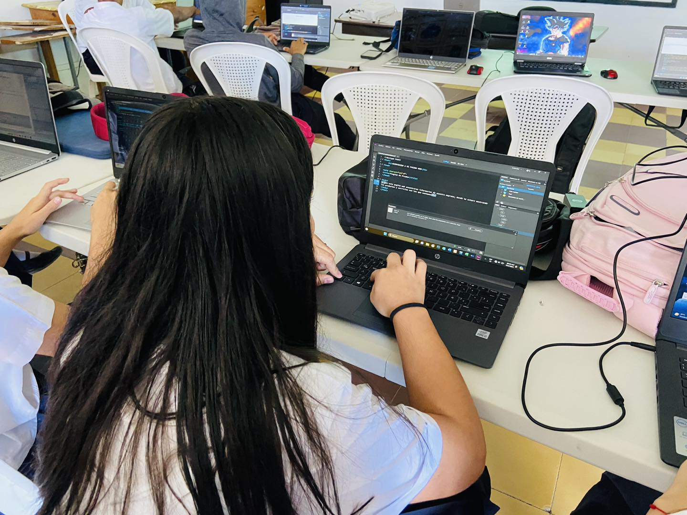

Es un concepto sinónimo de computación, y lo definiremos como conjunto de conocimientos científicos y de técnicas que hacen posible el tratamiento automático de la información por medio de computadoras. La informática combina los aspectos teóricos y prácticos de la ingeniería electrónica, teoría de la información, matemática, lógica y comportamiento humano. Los aspectos de la informática cubren desde la programación y la arquitectura informática hasta la inteligencia artificial y la robótica.
Las computadoras son esenciales para enfrentar el reto de la competencia global, donde los negocios deben ser eficientes y sensibles a las necesidades y producir bienes y servicios de alta calidad a un costo siempre mas bajo. Sin las computadoras, que proveen información precisa y actualizada necesaria para tomar decisiones estratégicas y administrar los procesos de producción, muchas compañías no podrían sobrevivir.
Se entiende como el resultado de los términos información y automatización. Trata de la concepción, realización y utilización de los sistemas para procesamiento de información. “INFORMÁTICA es la ciencia que estudia el tratamiento automático y racional de la información.” Se dice que el tratamiento es automático por ser máquinas las que realizan los trabajos de captura, proceso y presentación de la información, y se habla de racional por estar todo el proceso definido a través de programas que siguen el razonamiento humano.
El Bachillerato Técnico Profesional en Informática prepara a los egresados para desempeñarse en cualquier institución o empresa como asistente en el uso de herramientas de ofimática, funcionamiento y mantenimiento correcto del equipo de computo, así como, la creación de programas para el manejo efectivo de la información e instalación de redes locales.
1. En el espacio académico para que los estudiantes alcancen la madurez mediante una solida educación integral que los potencia para continuar estudios en el nivel superior.
2. Habilita a los egresados para insertarse al campo laboral y/o desarrollar su propia empresa.
3. Es mas simple pero a la vez mas riguroso en los saberes básicos. Es un currículo mas académico y técnico.
4. Esta estructurado con una formación de fundamento en el primer año que es común con el Bachillerato en Ciencias y Humanidades y que garantiza la movilidad académica en todo el país.
5. Los campos del conocimiento y módulos están programados en forma semestral.
6. Presenta integración de Honduras dentro de un contexto internacional globalizado e interdependiente.
7. Formación del estudiante con una conciencia de sostenibilidad del ambiente y recursos naturales.
– Interpreta manuales y documentación relacionada con la infraestructura tecnológica.
– Diseña planes de mantenimiento de la infraestructura tecnológica.
– Elabora y ejecuta planes de mantenimiento.
– Potencia la institución a través del manejo de presencia en Internet.
– Conoce y utiliza sistemas operativos y herramientas ofimáticas y tecnológicas de punta.
– Propone cambios en la infraestructura tecnológica institucional.
– Comunica cordial y eficientemente los planes y actividades del departamento o unidad de informática.
– Diseña Sitios Web.
– Repara y actualiza equipo tecnológico.
– Instala, utilizada y repara infraestructura de redes.
– Capacita en temas tecnológicos y de interés personal e institucional.
– Responsabilidad en el manejo del equipo.
– Participación y liderazgo activa en la elaboración y ejecución de programas de mantenimiento.
– Practica medidas de higiene y seguridad.
– Trabaja en equipo.
– Aplica el análisis de problemas para la toma de decisiones.
– Respeto y crítica constructiva hacia el trabajo de y con los demás.
– Proactividad en la gestión de recursos.